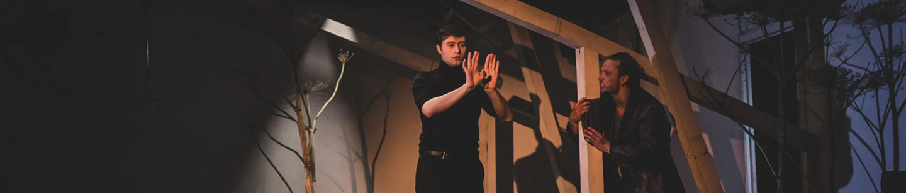
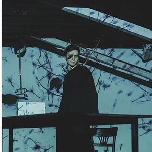
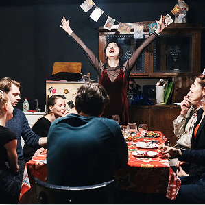
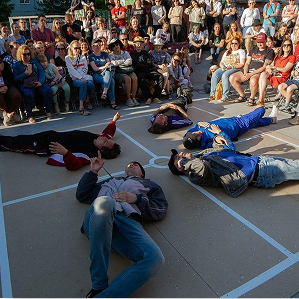

«Театр — не отображающее зеркало, а увеличивающее стекло»

Камерные театры Петербурга — то, что нельзя увидеть издалека, но невозможно забыть, оказавшись внутри. Здесь рождаются спектакли, построенные на близости зрителя
и актёра, на глубине истории и силе живых эмоций.
Мы собираем лучшие камерные сцены города, рекомендуем спектакли, на которые стоит пойти,
и помогаем открыть Петербург с новой стороны — тихой, интимной, театральной.
Добро пожаловать в пространство, где большие смыслы живут в малых формах.

Городской театр

Камерный театр Малыщинского (КТМ)

Плохой театр
Мы — студенты Санкт-Петербургского государственного университета промышленных технологий и дизайна, которые решили сделать сайт про камерные театры нашего города.
Цель: показать, что театр бывает не таким, каким его привыкли представлять. В Санкт-Петербурге существует большое количество камерных театров, после посещения которых ни один человек не останется равнодушным к искусству. Мы лично убедились в этом и теперь готовы делиться опытом со всеми желающими.
Если Вам интересно погрузиться в удивительный мир камерных театров, то жмите на кнопку ниже.
Если хотите, чтобы о вашем театре узнали,
напишите нам и мы добавим информацию на сайт!
kamernye.teatry@mail.ru